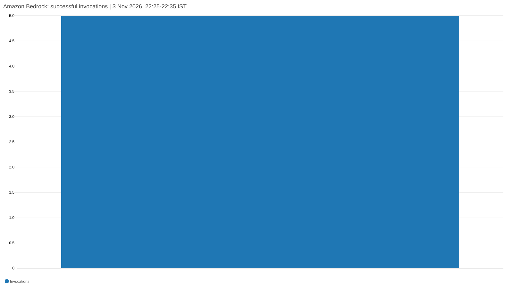
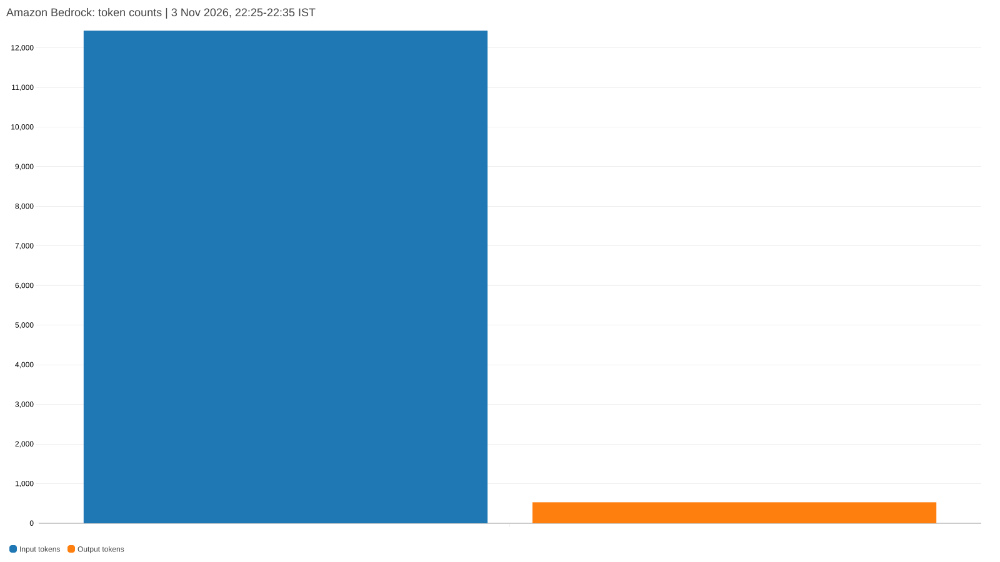
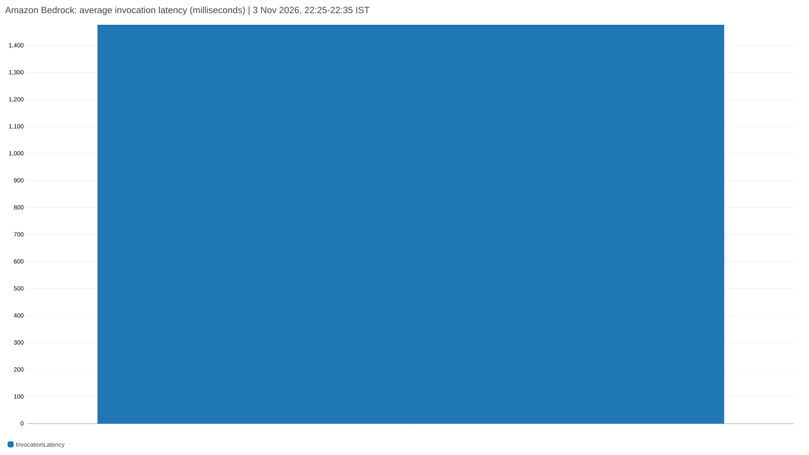

Fresh capture · 3 November 2026
The labelled pipeline run completed
Pipeline verification
| Check | Recorded result |
|---|---|
| Persisted input events | 72 |
| False positives / false negatives | 0 / 0 |
| Precision / recall | 1.0000 / 1.0000 |
| p50 / p99 latency | 353.84 / 2181.69 ms |
| Measured persistence rate | 39.04 events/s |
Live agent demonstration
| Check | Recorded result |
|---|---|
| Additional traced event | GOV-003: privileged login without MFA |
| Investigator / reviewer | Both tasks succeeded |
| Final review | review_passed |
| Model calls | 5 |
| Original preserved | True |
Synthetic functional run on local Docker with live Amazon Bedrock. The 72-event benchmark and the additional single-event agent demo are separate: the database contains 73 events and 49 findings.
Benchmark run ee395f98-db8a-4632-b2b6-13a111522cd0
Live HTTP health endpoints and database counts
All five producers reached the pipeline
| Adapter | Endpoint | Health | Ready | Accepted | Stored events |
|---|---|---|---|---|---|
| Keycloak | localhost:8101/events | ok | true | 25 | 25 |
| Kubernetes audit | localhost:8102/events | ok | true | 12 | 12 |
| Airflow/OpenLineage | localhost:8103/events | ok | true | 15 | 15 |
| Model registry | localhost:8104/events | ok | true | 9 | 9 |
| LLM gateway | localhost:8105/events | ok | true | 12 | 12 |
Rule coverage in the captured database
Every rule has three benchmark detections. GOV-003 has one additional detection from the live agent demo. Agents ran as completed CLI tasks; the container count describes the core pipeline.
One correlated event · actual Kafka record metadata
The same event is traceable through the stream
Source payload
{
"type": "LOGIN",
"userId": "evidence-demo-admin",
"attributes": {
"privileged_identity": true,
"mfa_used": false,
"tenant_id": "synthetic-demo"
},
"environment": "prod"
}Normalized event
{
"event_type": "LOGIN_SUCCESS",
"producer": "KEYCLOAK",
"outcome": "SUCCESS",
"actor_id": "evidence-demo-admin",
"attributes": {
"mfa_used": false,
"tenant_id": "synthetic-demo",
"privileged_identity": true
}
}HTTP 202 · 1 event accepted · canonical ID returned by adapter
| Actual topic record | Partition | Offset | Record key |
|---|---|---|---|
| governance.keycloak.v1 | 4 | 0 | evidence-demo-admin |
| governance.findings.raw.v1 | 3 | 12 | 05c1291a-2f47-3957-b0a0-c45947a6b3de |
| governance.findings.scored.v1 | 5 | 9 | 05c1291a-2f47-3957-b0a0-c45947a6b3de |
Event 9edbc195-3705-5aba-a0cc-dbed51530700
Finding 05c1291a-2f47-3957-b0a0-c45947a6b3de
SQL rows from the fresh demonstration
The source event and scored finding are persisted
Stored finding
| Field | Persisted value |
|---|---|
| Title | Privileged login without MFA |
| Severity | high |
| Frequency / band | 1 / 1 |
| Scorer status | ready |
| Baseline formula | 4 × 1 × 4 = 16 |
| Recommended score | max(baseline, Isolation Forest) |
Evidence and timestamps
| Field | Persisted value |
|---|---|
| Source event time (UTC) | 16:58:08.386 |
| Adapter ingested (UTC) | 16:58:08.406 |
| Finding detected (UTC) | 16:58:08.417 |
| Finding persisted (UTC) | 16:58:09.462 |
| Adapter-to-persistence latency | 1055.87 ms |
| Rule evidence | privileged_identity=true; mfa_used=false |
Source event 9edbc195-3705-5aba-a0cc-dbed51530700
Finding 05c1291a-2f47-3957-b0a0-c45947a6b3de
Application audit log · ordered by recorded timestamp
The agents read evidence before submitting
| Time (UTC) | Agent | Audited action | Input tokens | Output tokens |
|---|---|---|---|---|
| 16:58:10.867 | investigator | Claimed task | ||
| 16:58:13.204 | investigator | Bedrock response · turn 1 | 2129 | 36 |
| 16:58:13.248 | investigator | get_source_event | ||
| 16:58:13.263 | investigator | get_rule | ||
| 16:58:13.290 | investigator | get_related_events | ||
| 16:58:16.699 | investigator | Bedrock response · turn 2 | 2668 | 373 |
| 16:58:16.712 | investigator | submit_investigation accepted | ||
| 16:58:17.188 | reviewer | Claimed task | ||
| 16:58:19.603 | reviewer | Bedrock response · turn 1 | 1963 | 14 |
| 16:58:19.617 | reviewer | get_report | ||
| 16:58:20.472 | reviewer | Bedrock response · turn 2 | 2512 | 15 |
| 16:58:20.487 | reviewer | get_evidence | ||
| 16:58:22.426 | reviewer | Bedrock response · turn 3 | 3164 | 92 |
| 16:58:22.455 | reviewer | submit_review accepted | ||
| 16:58:22.472 | reviewer | Saved workflow result |
Original run de499241-c17f-4236-95af-46aa85b0f0a4
Fresh live Investigator and Evidence Reviewer result
The review accepted the evidence-based explanation
Investigator output
A privileged login occurred without MFA, matching GOV-003.
- The event shows privileged_identity=true and mfa_used=false for a LOGIN_SUCCESS.
- GOV-003 rule description confirms the requirement for second-factor authentication on privileged logins.
Assessment evidence_review_complete
Evidence Reviewer output
review_passed
The report accurately reflects the evidence: a single LOGIN_SUCCESS event shows privileged_identity=true and mfa_used=false, directly matching GOV-003 requirements. All claims are supported by the cited evidence without overstatement or unsupported inference.
Cited issues: 0
Original snapshot preserved: true
Revision requests: 0
Timeline copied from the source evidence
| Event time (UTC) | Report description |
|---|---|
| 2026-11-03T16:58:08.386498Z | Privileged identity 'evidence-demo-admin' logged in without MFA to client 'model-registry'. |
Original run de499241-c17f-4236-95af-46aa85b0f0a4
Review run d330cb4d-f3a5-47d3-adbe-532aea3098f5
This is the saved model output from the fresh run. The review is advisory; this single case is not a general accuracy measurement.
Saved live exchange · bounded correction and escalation
One revision, followed by a defined stopping point
RECORDED RUN: 2 November 2026 · Original model outputs retained · Separate from today's single-event demo
Original report excerpt
The actor had a privileged identity but did not use MFA for the login preceding the role grant
Reviewer feedback
The timeline incorrectly states the privileged login without MFA precedes the role grant. Evidence shows event:32a1114e-7f46-5f72-9fe2-714c5e6ba994 (LOGIN_SUCCESS) occurred at 2026-11-01T17:35:07Z, one second after event:5b6be220-0ed5-53aa-a14e-079d4c903ef7 (ROLE_GRANT) at 2026-11-01T17:35:06Z. The prose should reflect the correct order.
Claim path returned by reviewer /timeline/0/description
Evidence timestamps
| Event | Recorded time (UTC) |
|---|---|
| ROLE_GRANT | 17:35:06 |
| LOGIN_SUCCESS | 17:35:07 |
Saved revision
A subsequent LOGIN_SUCCESS shows the same actor used a privileged identity without MFA, occurring one second after the role grant.
The revision corrected this chronology statement. The final review raised remaining concerns and the application escalated the case after one revision. This capture demonstrates communication and the stopping rule.
Original run cddcd97a-3c7c-4f27-a6ed-412d68dbb2bc
Revision 5e36a07f-749a-4f97-8681-e82c9ff429a3
Fresh test run and broker/consumer inspection
Tests passed and all application findings were consumed
Actual test output
Captured at 2026-11-03T17:00:35.749231+00:00 Command: pytest -q services/investigator-agent/tests Database: isolated governance_evidence_test Model: scripted responses and provider stubs for automated tests ........................................................................ [ 86%] ........... [100%] 83 passed in 9.65s
| Consumer group | Reported offset lag | Payload-level interpretation |
|---|---|---|
| governance-rule-engine-v1 | 0 | Caught up |
| governance-postgres-sink-v1 | 0 | Caught up |
| governance-risk-scorer-v1 | 8 | 0 unread application records; tail consists of transaction/control offsets |
Automated tests used scripted models/provider stubs and an isolated PostgreSQL test database. The separate demo above used live Bedrock. Execution checks and semantic review quality are distinct measurements.
Read-only AWS CloudWatch API capture
AWS metrics corroborate the live Bedrock calls
CloudWatch returned the same invocation and token totals as the application audit for the demonstration window. These metrics are scoped to the AWS account, model and region; case-level attribution comes from the application trace.


AWS-rendered invocation count

AWS-rendered token counts

AWS-rendered latencyNamespace AWS/Bedrock · Region us-west-2
Model us.amazon.nova-2-lite-v1:0
Window: 3 Nov 2026, 16:55–17:05 UTC / 22:25–22:35 IST